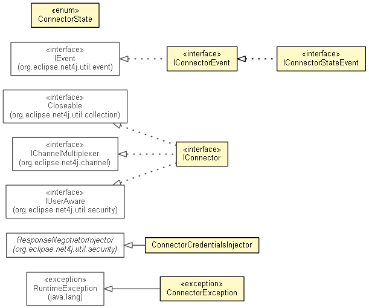

-
Interface Summary Interface Description IConnector One endpoint of a physical connection of arbitrary nature between two communicating parties.IConnectorEvent IConnectorStateEvent An event that is fired by anIConnectorto indicate that its state has changed. -
Class Summary Class Description ConnectorCredentialsInjector Injects a configurable response negotiator into selected client connectors. -
Enum Summary Enum Description ConnectorState Enumerates the lifecycle states of anIConnector. -
Exception Summary Exception Description ConnectorException Thrown by anIConnectorto indicate connection problems.
Package org.eclipse.net4j.connector Description
The Net4j transport layer concepts for dealing with connectors.